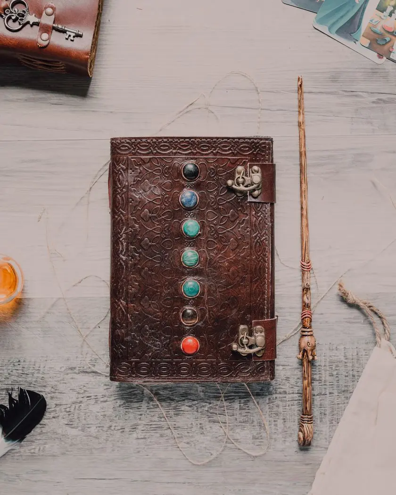
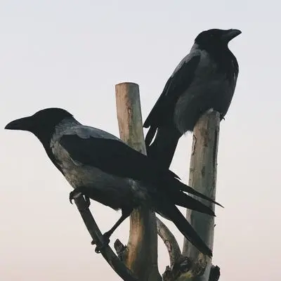
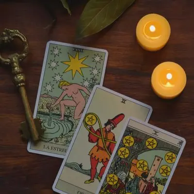
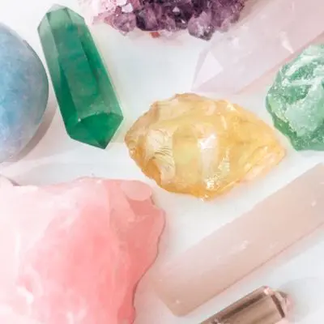
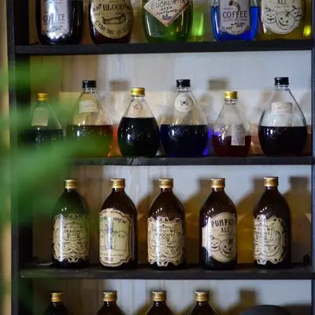
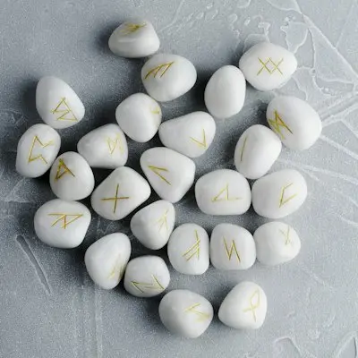
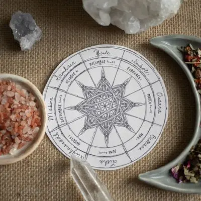
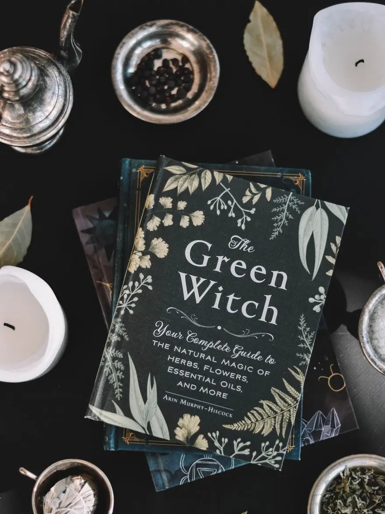

Protection Magick for Beginners
Before you manifest anything, protect what you have. Shields, wards, banishing, and the small daily habits that make a protection practice hold.
Read More: Protection Magick for Beginners
Fifteen linked grimoires and 20,000 pages, every entry sourced from published books.
“Oh boy, I just opened the notion template a couple of hours ago!! WOW!! It must have taken forever to build, it's way more detailed than I was expecting. Very quickly fell down the rabbit hole. I even found info on things I didn't know I wanted to know. Definitely my #1 source for research and info from now on. Well worth the money. Thank you!!!”
GamingGranLiza
“The moon phase and sign is correct. I just bought [the Manuscript] and logged in, and saw the moon widget. Checked it against my pro astrology app and it was precisely accurate to the degree, minute, and sign. I can't tell you how much that meant to me. I'm so happy and grateful for this. I feel blessed.”
amDevine
“I have just started scratching the surface and already love your work so much! Something about how everything is SO interlinked makes my 'practically raised by tech' brain so happy, it just feels streamlined!!”
Blue Moth
20,000+ pages in 15 grimoires, 170+ guide pages, 950+ coven members, and more than 200,000 additions and edits so far.
Most practitioners are piecing together their craft from a dozen scattered sources: Reddit threads of uncertain origin, books that contradict each other, notes buried in apps they'll never open again. The knowledge exists. It's just scattered.
The Magick Manuscript is one living online grimoire: 15 cross-linked grimoires, every entry sourced from reputable published scholarship, all searchable in one place. I stopped wishing something like this existed and built it myself.
From crystals and plants to deities, tarot, runes, dreams, rituals and timing, all searchable in one place.







What started as my own private notes spiraled into something far larger: a meticulously researched, cross-referenced database that reflects the relationships between every aspect of magickal practice. I'm neurodivergent, and this work became a deep special interest. I needed to see how every part of the craft connects in order to truly understand it.
Every entry is drawn from reputable published sources: books by established scholars and practitioners in witchcraft, folklore, and occult studies.
My personal practice is rooted in plant work, herbs, candles, tarot, runes, and crystals, with a strong focus on protection magick. Every entry in the Manuscript reflects something I have personally researched and, in most cases, used. My husband handles the technical architecture. I handle the research. Together we built the resource we couldn't find anywhere else.
The information within the Magick Manuscript is researched and compiled from reputable published sources, because your practice deserves a foundation you can trust.
Before you manifest anything, protect what you have. Shields, wards, banishing, and the small daily habits that make a protection practice hold.
Read More: Protection Magick for BeginnersA grimoire and a Book of Shadows aren't the same thing. A tour of the sections inside The Magick Manuscript, and how to decide what goes in yours.
Read More: What to Put in Your GrimoireBlack tourmaline protects, or it's dangerous, or it needs a full moon first. Sorting real knowledge from confident guesswork, one red flag at a time.
Read More: How to Spot Witchcraft Misinformation